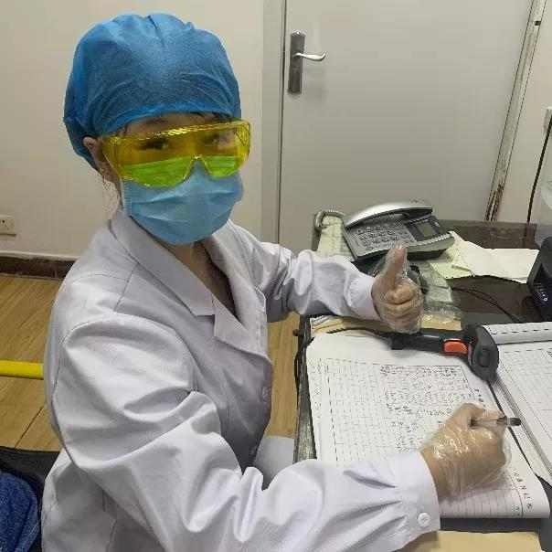

发布时间；2020-02-05
新冠肺炎疫情爆发以来，校团委认真落实学校党委要求，积极响应《共青团中央关于坚持党的领导，全团动 员，在防控疫情阻击战中充分发挥共青团生力军和突击队作用的通知》，广泛发动团员青年有序投身疫情防控一线。2月1日 ，校团委发布了《关于号召我校团员青年积极行动起来坚决打赢肺炎疫情防控阻击战有关工作的通知》，号召我校各基层团 组织、广大团干部及团员青年要立即行动起来，践行好党旗所指就是团旗所向，发挥好共青团在宣传动员、舆情引导、志愿 服务等方面的组织优势，在学校党委领导下做好疫情防控工作，为坚决遏制疫情扩散、夺取防控斗争胜利贡献力量。我校各 级团组织、广大团员青年积极响应号召，积极为疫情防控阻击战贡献力量，在防控疫情工作中以多种方式积极发挥作用。
在祖国各地的抗“疫”一线，师大青年们面对疫情防控，始终“在线”不“掉线”，坚持志愿服务，挥洒奋斗青春 。充分体现了师大学子“怀天下，求真知”的优秀品质。在接下来的疫情防控工作中，更多的师大青年将继续全力以赴，用实 际行动体现当代大学生的光荣使命！